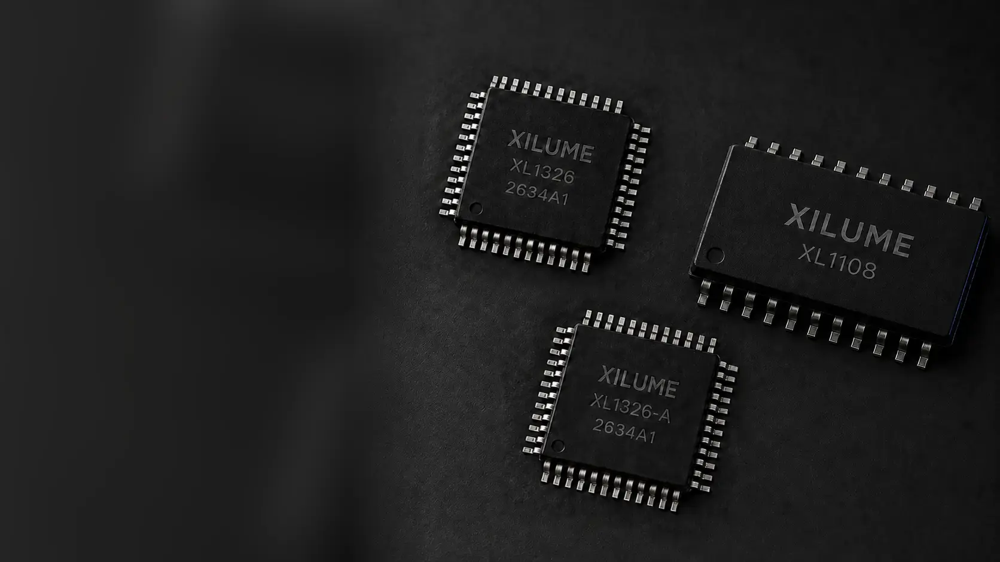
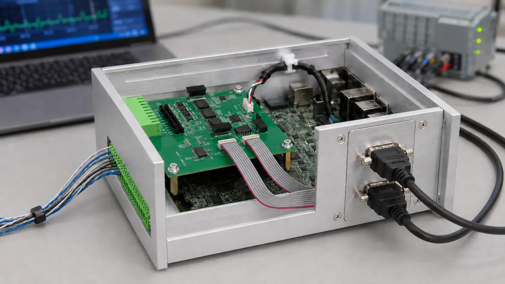
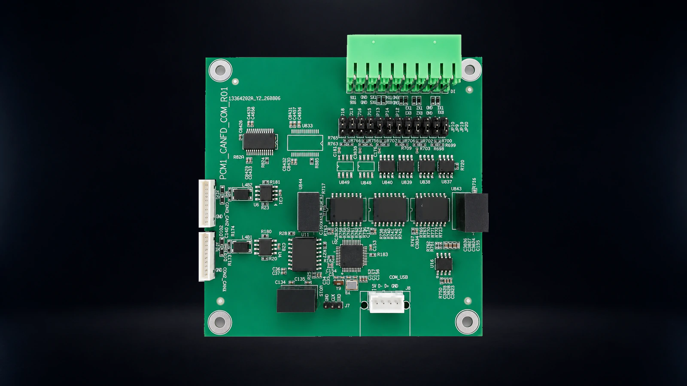

XILUME INTERFACE ICS
Serial and CAN FD.
Choose your mix.
XL1326 with 8 COM ports, or XL1326-A with 2 CAN FD ports only.


XILUME INTERFACE ICS
XL1326 with 8 COM ports, or XL1326-A with 2 CAN FD ports only.
PRODUCT CATEGORIES
Purpose-built hardware for industrial communication, system integration, and power.
View all products
CAN FD and serial modules designed to stay inside industrial PCs, robots, and connected machines.
Explore family →Portable access to CAN FD and serial networks for commissioning, service, and fault finding.
Explore family →Serial, CAN FD, and mixed-interface channel configurations for OEM systems.
Explore family →
Battery data, charging control, and system-level power visibility for mobile equipment.
Explore family →SOLUTIONS
Choose by the host connection, the field interfaces, and where the hardware must live.
View all solutions
Add two isolated CAN and CAN FD channels through a compatible Mini PCIe slot—without an external adapter.

Bring two CAN FD, four RS-485, and two RS-232 channels into one robot or industrial machine.
About Xilume
Xilume combines interface ICs, interface modules, host software, and technical resources.
Product support includes electrical information, pin definitions, reference circuits, host protocols, drivers, and integration guidance.